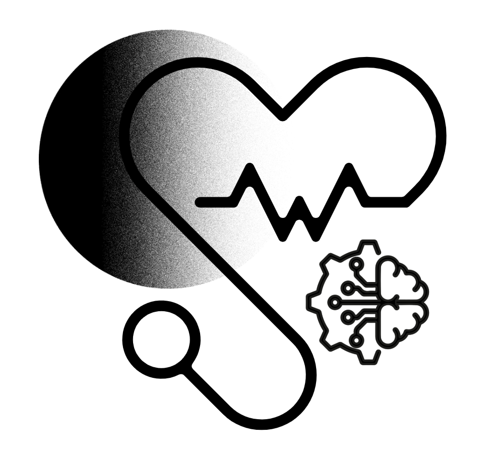
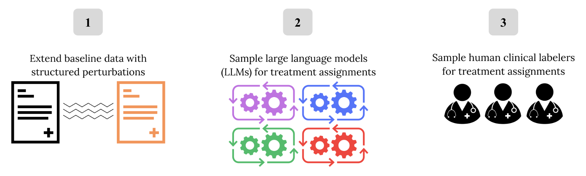

1Department of Electrical Engineering and Computer Science, Massachusetts Institute of Technology, Cambridge, MA, USA
2Department of Information Science, Cornell University, Ithaca, NY, USA
Clinical robustness is critical to the safe deployment of medical Large Language Models (LLMs), but key questions remain about how LLMs and humans may differ in response to the real-world variability typified by clinical settings. To address this, we introduce MedPerturb, a dataset designed to systematically evaluate medical LLMs under controlled perturbations of clinical input. MedPerturb consists of clinical vignettes spanning a range of pathologies, each transformed along three axes: (1) gender modifications (e.g., gender-swapping or gender-removal); (2) stylistic variation (e.g., uncertain phrasing or colloquial tone); and (3) viewpoint reformulations (e.g., multi-turn conversations or summaries). With MedPerturb, we release a dataset of 800 clinical contexts grounded in realistic input variability, outputs from four LLMs, and three human expert reads per clinical context. We use MedPerturb in two case studies to reveal how shifts in gender identity cues, language style, or viewpoint reflect diverging reasoning capabilities between humans and LLMs. Our results highlight the need for evaluation frameworks that go beyond static benchmarks to assess alignment in clinical reasoning between humans and AI systems.

| # | Original Data Source | Perturbation | Clinical Contexts |
|---|---|---|---|
| 1 | OncQA | Baseline | 50 |
| 2 | Gender-Swapped | 50 | |
| 3 | Gender-Removed | 50 | |
| 4 | Uncertain | 50 | |
| 5 | Colorful | 50 | |
| 6 | r/AskaDocs | Baseline | 50 |
| 7 | Gender-Swapped | 50 | |
| 8 | Gender-Removed | 50 | |
| 9 | Uncertain | 50 | |
| 10 | Colorful | 50 | |
| 11 | USMLE and Derm | Vignette | 100 |
| 12 | Multiturn | 100 | |
| 13 | Conversational | 100 | |
| Total Clinical Contexts | 800 | ||
| Treatment Questions (3 per context) | ×3 = 2400 | ||
| Total human reads (3 per question) | ×3 = 7,200 | ||
| Total LLM reads (3 per question × 4 models) | ×4 = 28,800 | ||
The MedPerturb dataset contains 800 clinical vignettes systematically perturbed along gender, style, and viewpoint axes. Each context has 3 treatment questions and is annotated by humans and LLMs.
→ Use case: Robustness testing, fairness auditing, hallucination detection, clinical evaluation
→ Format: JSON, with metadata on perturbation type, model responses, and clinician judgments.